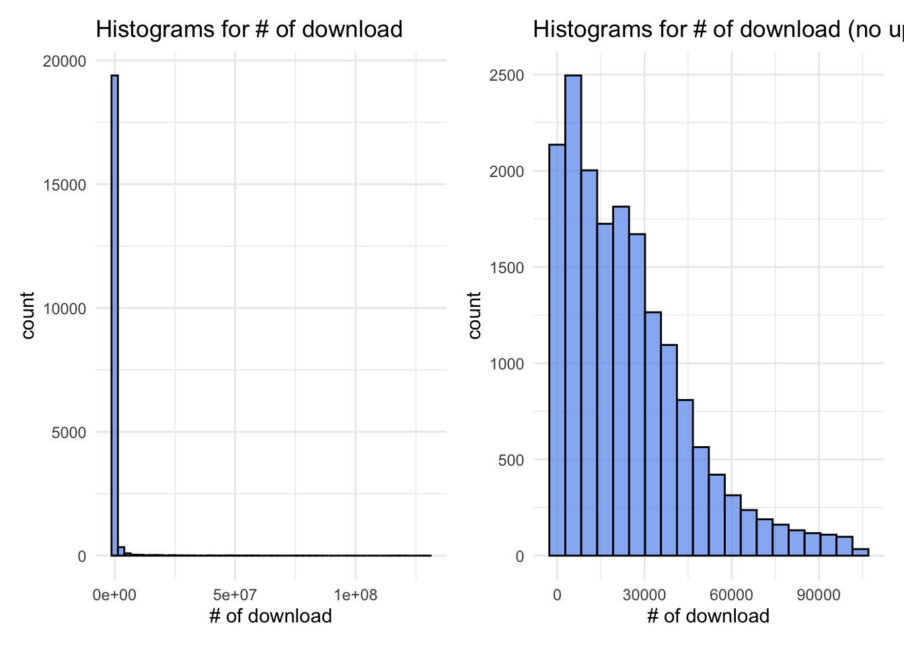
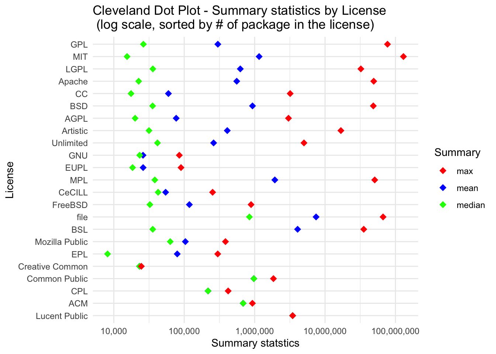
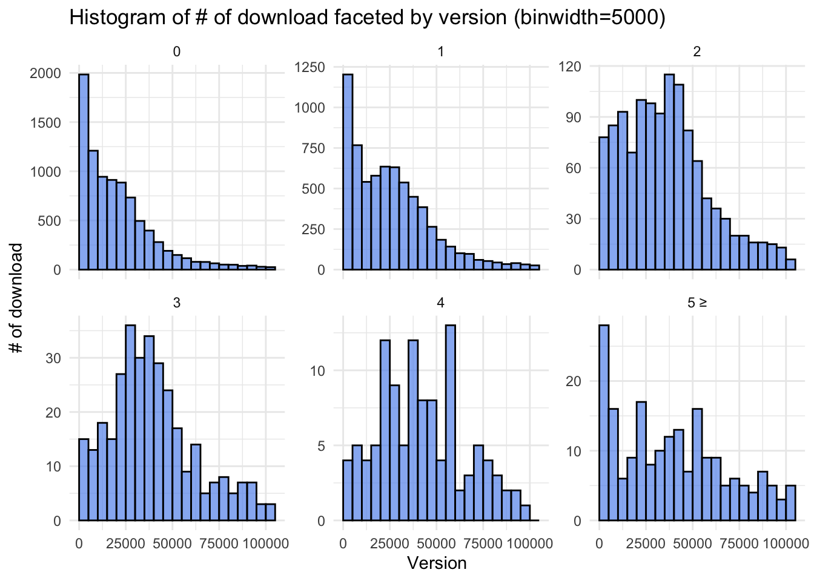
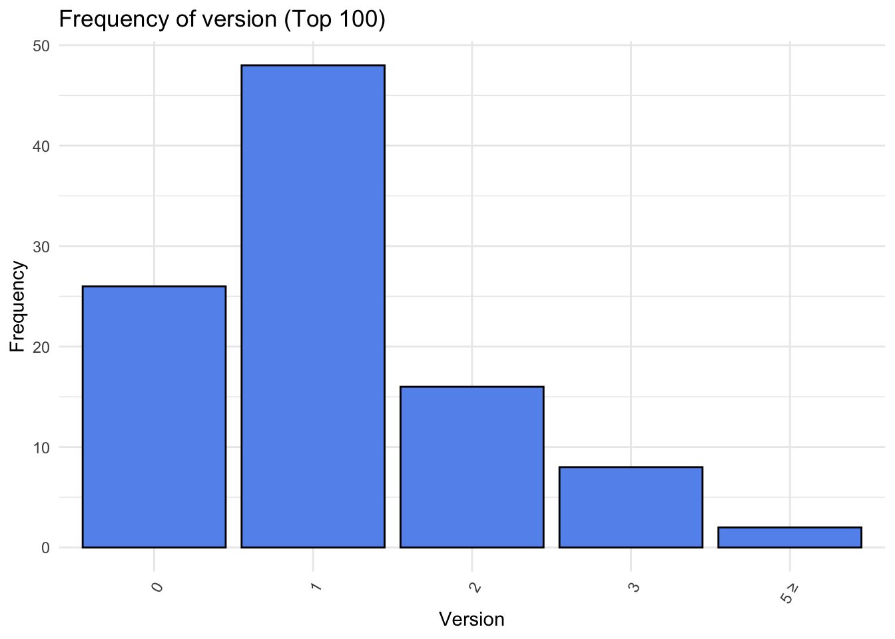
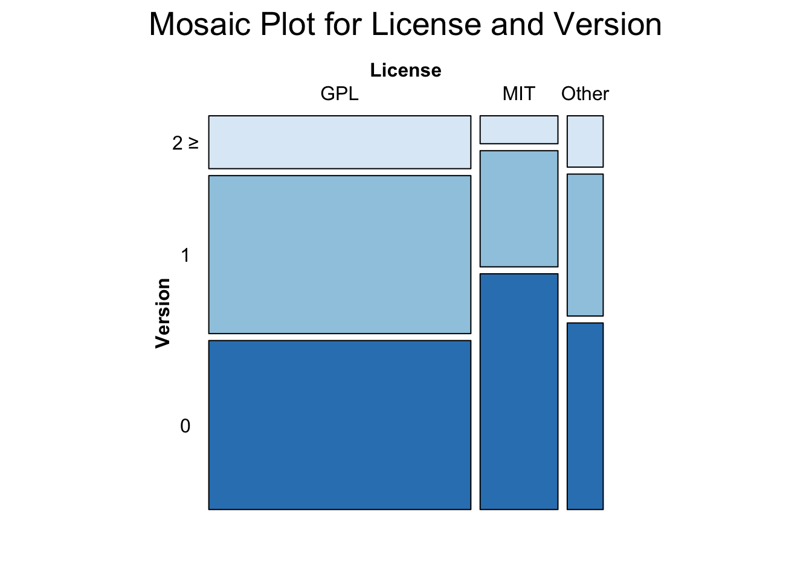

Licensing Trends: What are the prevailing trends in package licensing within the R ecosystem?
Maintainability of Package: How version updates correlate with other package characteristics, such as the number of dependent packages and suggested packages, and the total number of downloads.
Dependency Analysis: How do package dependencies (Depends, Imports, LinkingTo) influence the popularity of R packages?
3.1 Understanding the Popularity Landscape
In our exploration of R packages, our primary aim is to discern the traits that contribute to a package’s popularity. To gauge popularity, we turn to the number of downloads as a proxy metric. Let’s delve into the distribution of download counts.
The histogram reveals a right-skewed distribution, signifying that the majority of R packages have relatively low download counts, while a select few enjoy substantial popularity. However, this visual can be overwhelming when looking at the entire dataset, prompting us to create a refined histogram without upper outliers. This adjusted view retains a right-skew but approximates an exponential distribution. Notably, the mode for the number of downloads falls within the range of 5000 to 10000, encompassing approximately 12% of all packages.
Code
library(ggplot2)library(patchwork)df =read.csv("./assets/cran_packages_dropped.csv")hist =ggplot(df, aes(x = count)) +geom_histogram(fill ="cornflowerblue", color ="black", alpha =0.7, bins =50) +labs(title ="Histograms for # of download ", x ="# of download") +theme_minimal() iqr <-IQR(df$count)# Set a threshold for identifying upper outliersthreshold <-1.5# You can adjust this value based on your criteria# Identify upper outliersupper_outliers <- df$count >quantile(df$count, 0.75) + threshold * iqr# Filter rows with upper outliersno_outliers_df <- df[!upper_outliers, ]hist_no_outlier =ggplot(no_outliers_df, aes(x = count)) +geom_histogram(fill ="cornflowerblue", color ="black", alpha =0.7, bins =20) +labs(title ="Histograms for # of download (no upper outliers)", x ="# of download") +theme_minimal()hist / hist_no_outlier

3.2 License pattern
Having gained insights into the popularity distribution, our next inquiry involves the relationship between the type of license and a package’s popularity. With 159 unique licenses in our dataset, we opted to group them into 24 license groups, focusing on broader categorizations to simplify the analysis.
Examining the distribution of license types, we find that GPL and MIT are the predominant licenses, collectively constituting nearly 90% of all R packages. The popularity of GPL and MIT licenses is further underscored by their extensive use within the R community. GPL, known for its open-source nature, aligns with the collaborative ethos of the R environment, while the MIT license, with its permissive nature, attracts developers seeking flexibility.
Code
library(tidyr)library(dplyr)
Attaching package: 'dplyr'
The following objects are masked from 'package:stats':
filter, lag
The following objects are masked from 'package:base':
intersect, setdiff, setequal, union
To understand how the type of license may influence download counts, we employed Cleveland dot plots to highlight key statistical metrics for each license group. While the maximum download counts are generally higher for the most prevalent licenses, such as GPL and MIT, no strict ordering is observed. Interestingly, licenses like MPL and File, with lower prevalence, boast high maximum download counts, suggesting that popularity is not solely determined by prevalence.
A recurring theme across all license types is the consistently larger mean than median, indicating a skewed distribution where a small number of packages command a significant number of downloads. This skewness is consistent regardless of the license type.
Upon closer inspection, we find that less prevalent licenses tend to have higher median download counts. This suggests that, within less popular license categories, there is a relatively higher concentration of moderately popular packages. The reasons for this intriguing phenomenon warrant further investigation.
Code
license_sort = value_counts_agg %>%arrange(total_count)df$license_group <-factor(df$license_group, levels = license_sort$license_group)df_summary <- df %>%group_by(license_group) %>%summarise(mean =mean(count),median =median(count),max =max(count) )# order_max = df_summary %>% arrange(max) %>% pull(license_group)# order_maxtmp = df_summarydf_summary =pivot_longer(df_summary, cols =c(mean, median, max), names_to ="statistic", values_to ="value")df_summary =left_join(df_summary, tmp, by ="license_group")# Create a Cleveland dot plotplot =ggplot(df_summary, aes(x = license_group, y = value, color =factor(statistic))) +geom_point(shape =18, size=3) +labs(title ="Cleveland Dot Plot - Summary statistics by License \n (log scale, sorted by # of package in the license)", x="License", y ="Summary statstics", color ="Summary") +scale_color_manual(values =c("mean"="blue", "median"="green", "max"="red")) +theme(axis.text.x =element_text(angle =60, hjust=1)) +theme_minimal() +coord_flip()plot_log <- plot +scale_y_log10(labels = scales::comma)plot_log

3.4 License and Popularity (Top 100) ~ A Shift in License Dynamics ~
In our exploration of package popularity, we’ve broadened our scope to scrutinize the correlation between license types and download counts, this time focusing on the top 100 downloaded packages. Surprisingly, this more exclusive group unveils a shift in the license landscape.
Within the top 100, MIT-licensed packages outshine their counterparts, with more than double the presence of GPL-licensed packages. This stark contrast underscores the high regard and widespread adoption of MIT-licensed packages within the upper echelons of popularity. The MIT license’s permissive nature may be a key factor contributing to the prominence of its associated packages.
Diving deeper into license prevalence within the elite 100, intriguing observations emerge. The third most prevalent license, LGPL, makes a solitary appearance, contrasting with its higher prevalence in the broader dataset. Conversely, licenses like File and MPL, which occupy a modest standing in overall prevalence, manage to secure a spot within the coveted top 100.
To summarize, the overall shape of the bar graphs remains relatively consistent, the prevalence of different licenses undergoes notable shifts when we transition from the entire dataset to the top 100.
3.5 Influence of the degree of maintainance in popularity
In our quest to uncover correlations between maintenance efforts and package popularity, we employ the version number as a proxy metric for maintenance intensity. By considering the leading digit of the version (e.g., version 1.2.4 becomes version 1), we aim to capture a holistic view of maintenance practices. Prior to delving into the analysis, we address two crucial considerations.
The first challenge revolves around the initial version assigned to a package, varying between version 0 and version 1. Acknowledging the ambiguity of whether version 1 signifies the initial release or a subsequent update, we opted to treat the version as is, embracing the inherent diversity in package versioning strategies.
Some packages exhibit version numbers exceeding 1000, not indicative of an astronomical number of updates but often reflecting initial versioning based on dates (e.g., 2022.03.02). To manage this, versions larger than 5 were grouped together. This pragmatic grouping ensures a balanced analysis while acknowledging the limited presence of such instances.
3.5.1 Without upper outliers :
As stated before, since the dataset includes extreme outliers, we first investigate the trend with excluding upper outliers for the sake of clear visualization. For versions less than 2, the mode resides within the first bin (less than 5000 downloads). In contrast, version 2 displays a mode within the range of 37500 to 40000 downloads. This trend persists for versions 3 and 4, indicating a clear association between higher version numbers and increased download counts. However, versions larger than 5, despite their sporadic presence, exhibit a mode within the lower download count range (<5000).
Code
library(stringr)# Boxplot + density based on the version (popularity)df$version_group <-as.numeric(str_extract(df$Version, "\\d+"))df = df %>%mutate(version_group =if_else(version_group >=5, 5, version_group))df$version_group =as.factor(df$version_group)df = df %>%mutate(version_group =if_else(version_group =="5", "5 ≥", version_group))# Function to filter outliers using IQRfilter_outliers_iqr <-function(x, coef =1.5) { q1 <-quantile(x, 0.25) q3 <-quantile(x, 0.75) iqr <- q3 - q1 lower_bound <- q1 - coef * iqr upper_bound <- q3 + coef * iqrreturn(between(x, 0, upper_bound))}# Filter outliers using the filter_outliers_iqr functionfiltered_df <- df %>%filter(filter_outliers_iqr(count))custom_breaks <-seq(0, max(filtered_df$count) +5000, by =5000)version_hist =ggplot(filtered_df, aes(x = count, fill=version_group)) +geom_histogram(fill ="cornflowerblue", color ="black", alpha =0.7, breaks=custom_breaks) +labs(title ="Histogram of # of download faceted by version (binwidth=5000)", x ="Version", y ="# of download") +facet_wrap(~version_group, scales ="free_y") +theme_minimal()version_hist

Upon closer inspection of the top 100 downloaded packages, a paradoxical shift emerges. Version 1 emerges as the most frequent, closely followed by version 0. This apparent contradiction to the earlier trend might be becuse that highly popular packages tend to undergo meticulous scrutiny before release, potentially reducing the need for frequent updates. Additionally, the interconnected nature of popular packages, serving as dependencies for numerous others, may influence authors to intentionally refrain from frequent updates.
Code
top100_df_version = df %>%arrange(desc(count)) %>%slice(1:100)top_100_version_bar <-ggplot(data=top100_df_version, aes(x=version_group)) +geom_bar(fill="cornflowerblue", color ="black") +theme_minimal() +theme(axis.text.x =element_text(angle =60, hjust=1)) +labs(title="Frequency of version (Top 100)", x="Version", y="Frequency")top_100_version_bar

3.6 A Confluence of Factors: License and Version
Having explored the impact of license and version on package popularity individually, we now venture into the intriguing territory where these two dimensions intersect, unveiling how they collectively shape a package’s acclaim.
Mapping License and Version Relations: Our initial examination focuses on the interplay between licenses and version numbers. Notably, MIT-licensed packages exhibit a higher prevalence of version 0, contrasting with GPL licenses. While the proportion of version 0 is comparable for both licenses, GPL licenses exhibit a more pronounced presence in the realm of higher versions (2 and beyond).
MIT’s Version 0 Dominance: The predominance of version 0 among MIT-licensed packages piques curiosity. While speculation abounds, one possibility is that MIT licenses may attract a substantial number of initial releases, capturing the spirit of experimentation and innovation.
GPL’s Higher Version Realm: In stark contrast, GPL licenses assert themselves more prominently in the domain of higher version numbers (2 and above). This phenomenon may reflect a commitment to continued development and improvement within the GPL ecosystem, catering to the evolving needs of users and stakeholders.
Interestingly, when we compare GPL and Other, we observe version distributions that are nearly identical.
Warning in brewer.pal(1, "Blues"): minimal value for n is 3, returning requested palette with 3 different levels

##A Unified Perspective: License, Version, and Popularity Now we examine the combined influence of license and version on popularity. By excluding upper outliers, we focus our analysis on a refined dataset that offers a clearer lens through which to view the interplay of these factors.
Unified Popularity Patterns: Intriguingly, when we delve into version 0 and 1, a consistent narrative unfolds across licenses. The distribution reveals a shared right-skewed pattern. Irrespective of the license, version 0 and 1 packages predominantly reside within the realm of lower download counts.
GPL’s Stronghold in Higher Versions: A shift occurs when we ascend to version numbers greater than 2. GPL licenses assert their dominance, with a mode around 40,000 downloads. In contrast, MIT licenses exhibit a mode around 5,000 downloads for higher versions. This disparity suggests that the influence of higher version numbers on popularity is more pronounced within the GPL ecosystem.
Code
majority_license_df_filter <- majority_license_version_df %>%filter(filter_outliers_iqr(count))ggplot(majority_license_df_filter, aes(x = count)) +geom_histogram(fill ="cornflowerblue", color ="black",breaks=custom_breaks) +facet_grid(version_group ~ license_group, scales ="free_y") +labs(x ="Count", y ="Frequency") +ggtitle("Faceted Histogram by Version and License") +theme_minimal()